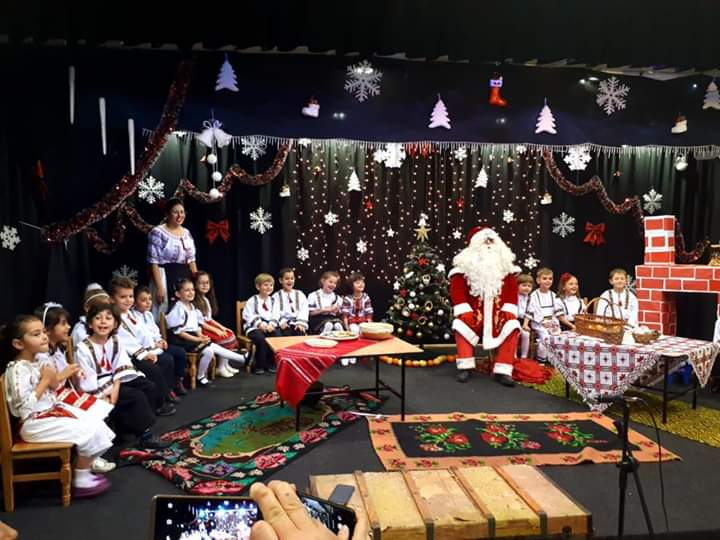
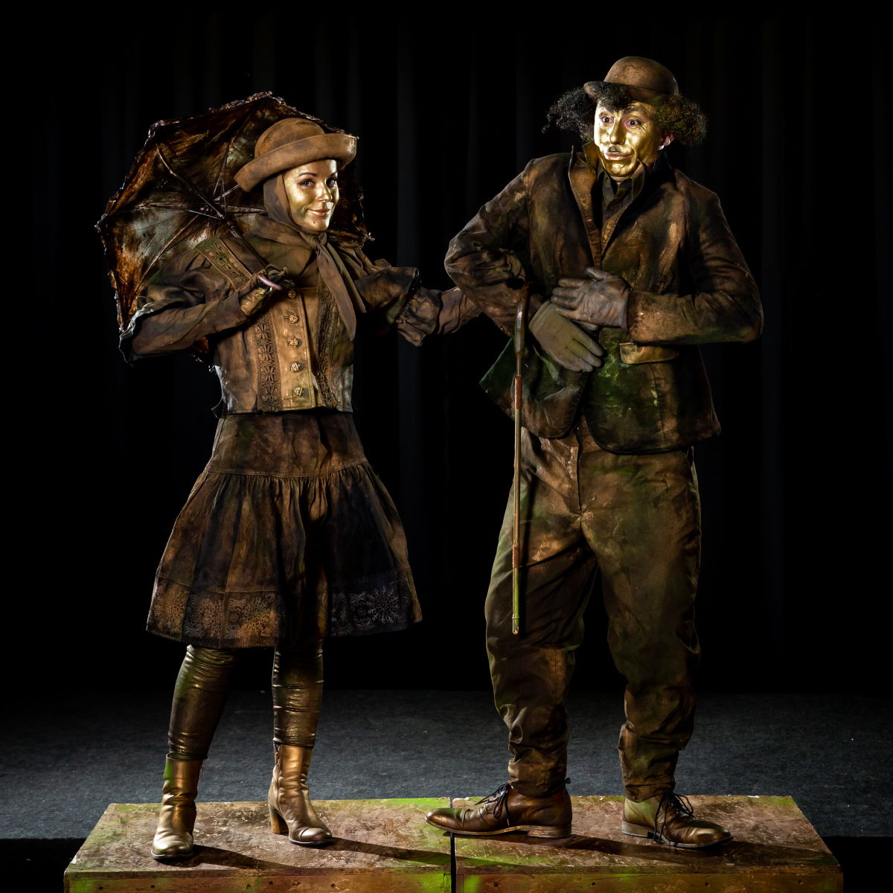
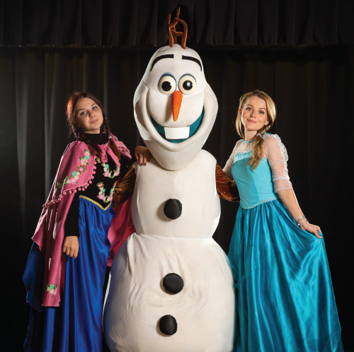
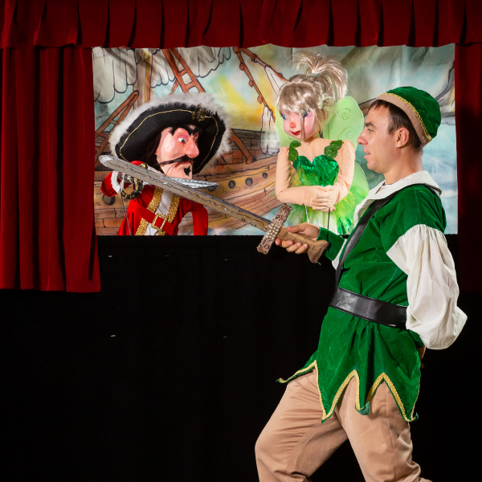
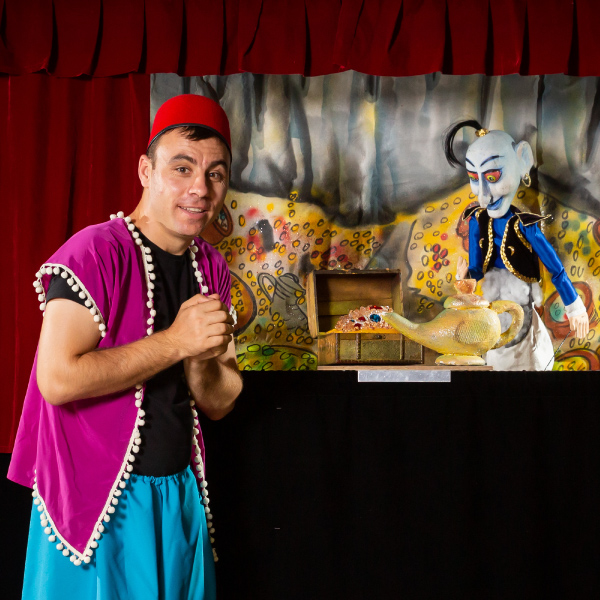
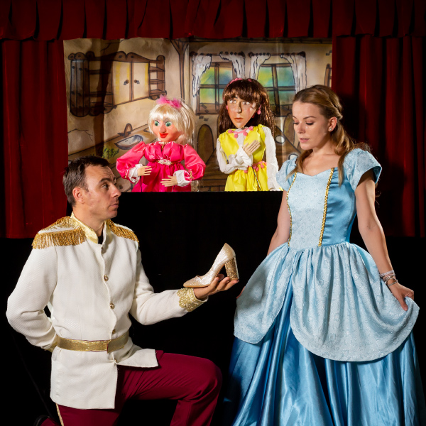
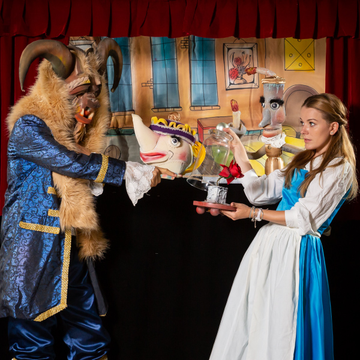

Spectacole cu păpuși și marionete, petreceri tematice, mascote, serbări și ateliere de creație — puse în scenă de actori profesioniști, absolvenți UNATC, cu peste 10 ani de experiență.
100+ personaje interpretate · 25+ spectacole în repertoriu · 1000+ petreceri tematice

Fie că ești părinte, educator sau organizezi un eveniment, avem un spectacol pregătit pentru voi.
Spectacole cu păpuși și marionete, petreceri de neuitat cu animatori și personaje de poveste, pentru zile de naștere, botezuri și momente speciale.
Petreceri și ateliere →Venim noi la voi: spectacole de teatru de păpuși, serbări și festivități cu povestea aleasă special pentru clasa voastră.
Festivități și serbări →Primării, consilii locale, festivaluri, mall-uri și centre culturale: spectacole, mascote, statui vivante și momente artistice memorabile.
Mascote și parade →
Peste 25 de povești îndrăgite, jucate cu păpuși și marionete de actori profesioniști — în orașul tău, la școală sau la evenimente.
Vezi spectacolele →
Festivități și serbări pentru grădinițe și școli, festivaluri, turnee și evenimente culturale, în parteneriat cu instituții și primării.
Festivități, festivaluri, cultură →
Mascote animate, statui vivante și personaje care defilează, întâmpină invitații și dau viață oricărui eveniment.
Momente artistice →
Petreceri pentru copii cu animatori, face painting, baloane modelabile, personaje de poveste — plus ateliere de creație și cursuri de teatru.
Petreceri și ateliere →Peste 25 de povești în repertoriu — de la clasicii fraților Grimm la Creangă și Disney. Iată câteva dintre preferatele copiilor:




„Teatrul Copilăriei” este un concept unic, creat în 2014 cu scopul de a participa la procesul educativ al copiilor prin spectacole cu păpuși și marionete.
În timpul anului școlar suntem prezenți în școli și grădinițe cu spectacolele noastre, iar în weekenduri suntem gazdele unui univers de poveste, în care copiii sunt integrați activ în firul narativ. Participăm la festivaluri și turnee naționale.

Absolvent UNATC (2011), două masterate în artele spectacolului. Actor la Teatrul Metropolis București, regizor la teatrele „George Ciprian” și „Cărăbuș”.

Absolventă UNATC, secția Păpuși-Marionete (2011). Co-fondatoare și sufletul spectacolelor Teatrului Copilăriei; asistent de regie, dramatizare și concept de costume la producțiile Teatrului „George Ciprian”.
Îmi doresc să schimb mentalitatea că spectacolul pentru copii este ceva facil.
O interpretare captivantă, regizată cu măiestrie de buzoianul Octavian Ghinea.
Atmosfera de basm este creată cu mijloacele moderne ale teatrului de animație.
Ne poți contacta oricând, pentru orice: un spectacol, o petrecere, o serbare sau doar o întrebare.